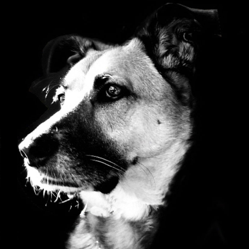

Organizers Davide Fucci Blekinge Institute of Technology Sweden Hidetake Uwano NARA Institute of Technology Japan Program Committee To be announced soon! Important Dates Paper submissions: January 22, 2020 Notification to authors: February 25, 2020 Camera-ready copies due: March 16, 2020 Workshop: May 24 , 2020 Social Media [Loading Tweets by SEmotion_ws…] Workshop Organizers Davide Fucci, Blekinge Institute of Technology, Sweden Hidetake Uwano, NARA Institute of Technology, Japan

Social Media
[Loading Tweets by SEmotion_ws…]